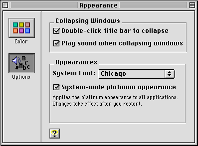
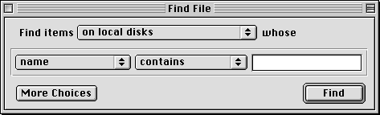
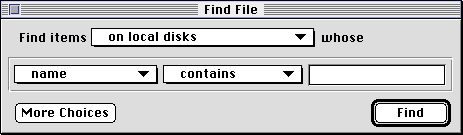

The Appearance Manager
Mac OS 8 introduces the Appearance Manager, which specifies how all Mac OS interface elements will appear. Appearance settings are selected through the Appearance control panel, shown in Figure 1-1.Figure 1-1 Appearance control panel

Note the checkbox labeled "System-wide platinum appearance." This is an example of an important change in the Mac OS 8 human interface: users have direct control over the appearance of interface elements. To illustrate this, compare the Find File dialog box using platinum appearance (Figure 1-2) and the Find File dialog box on the same computer with platinum appearance turned off (Figure 1-3).
Figure 1-2 Find File dialog box under platinum appearance

Figure 1-3 Find File dialog box with platinum appearance turned off

Note the differences in buttons, pull-down menus, and window structure. This reveals a major change in the Mac OS human interface: since the Mac OS now provides for multiple appearances, there is no longer a direct correspondence between the appearance of Mac OS interface elements and their behavior.
You may find this change a bit startling at first, as it might seem to result in a less unified and coherent interface. Fortunately, there are two major facts which help prevent chaos:
The Mac OS 8 Toolbox provides an extended, enhanced suite of interface elements which make it easier to produce a consistent, attractive user interface. If you do these three things:
- Toolbox-generated controls behave consistently acroll all appearance themes. A pop-up menu button, for example, displays the distinctive double arrow and behaves predictably under any theme.
- Control appearance is consistent within each theme.
you will not only save yourself a significant amount of work, you will ensure that your application will be able to use the Appearance Manager to produce a coherent, rewarding user experience now and in the future.
- use the Mac OS Toolbox to create the controls, windows, and alert boxes described in this document whenever possible
- when you must employ non-standard controls, use the color palette supplied by the Appearance Manager
- follow the layout guidelines described in this document